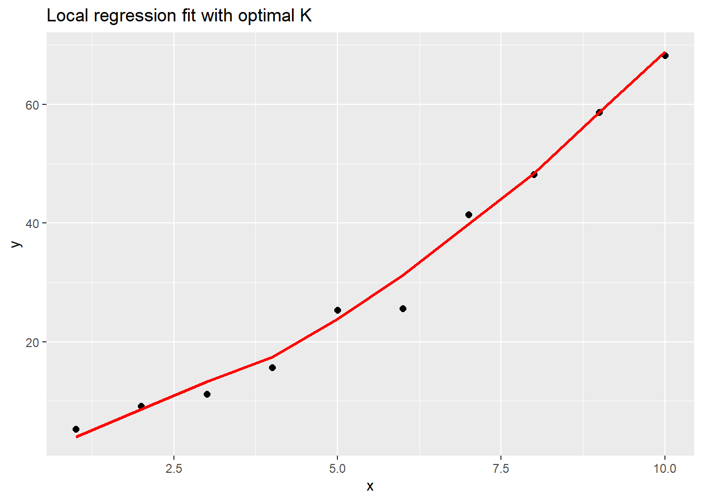
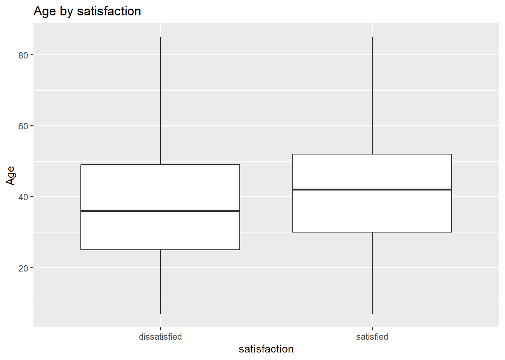
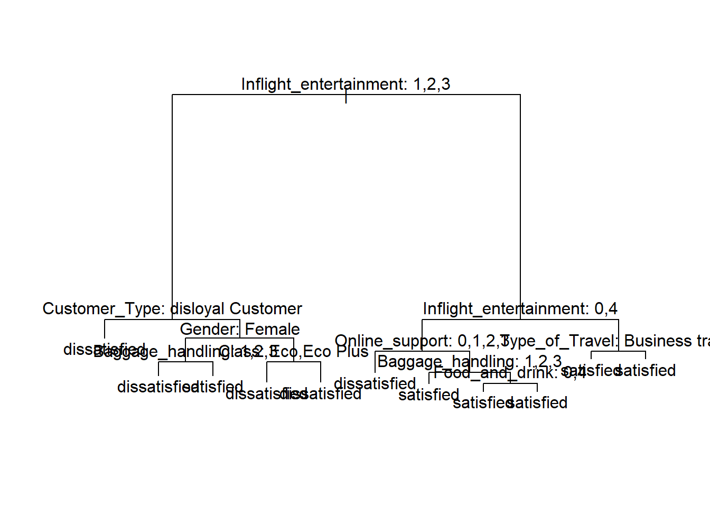
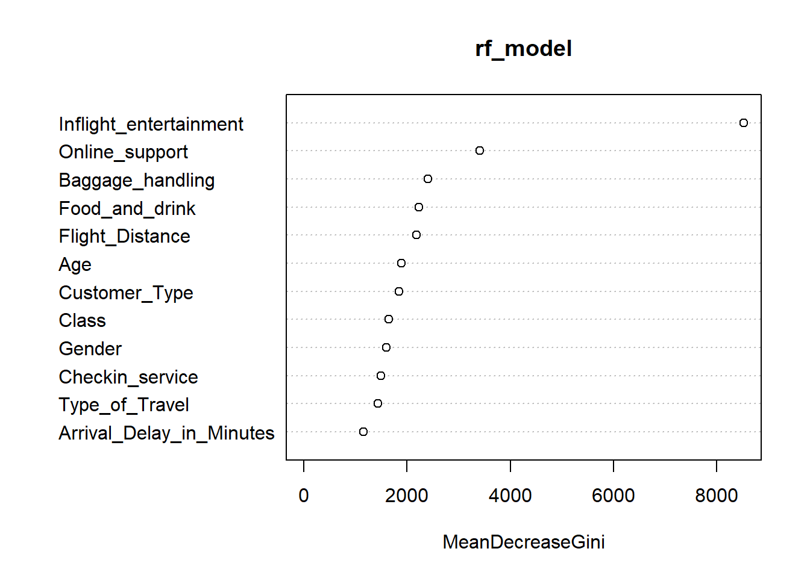

# Load packages used across the 2024 exam tasks.
library(tidyverse) # Data import, wrangling, plotting
library(tree) # Classification trees
library(randomForest) # Random forest and bagging
# Read data once so all later chunks can use the same object names.
airline <- read_csv("airline.csv", show_col_types = FALSE)
# Keep a reproducible train/test split for predictive tasks.
set.seed(123)
n <- nrow(airline)
ind <- sample(seq_len(n), size = floor(n / 2))
training <- airline[ind, ]
test <- airline[-ind, ]BAN404 R Exam Compendium
Comprehensive solution guide — 2024 school exam
0.1 Setup and libraries
0.2 Task 1a
Question: Explain what the following R-function is doing.
How to recognize this method on the exam (The Detective Work): - The code computes distance from one target value to all observed x-values. - It chooses the K nearest points using ordered distances. - It fits a local linear regression on only those K points. - That means this is a local nearest-neighbor smoother with linear fit, not global OLS.
Step-by-step code:
# Original function from exam.
f <- function(x0, x, y, K = 3) {
# Step 1: distance from each training x to the query point x0.
d <- abs(x - x0)
# Step 2: index positions of K smallest distances.
o <- order(d)[1:K]
# Step 3: subset K nearest x and matching y values.
xl <- x[o]
yl <- y[o]
# Step 4: fit local linear regression on those K neighbors.
xydata <- data.frame(xl = xl, yl = yl)
reg <- lm(yl ~ xl, data = xydata)
# Step 5: predict y at x0 using local line.
ypred <- predict(reg, newdata = data.frame(xl = x0))
return(ypred)
}AAA-Grade Written Answer: This function performs local prediction by finding the K nearest x-values to a target x0, fitting a local linear model on those points, and predicting y at x0. The method resembles KNN because of nearest neighbors, but differs because it predicts with a local regression line rather than a local average.
0.3 Task 1b
Question: Consider the small dataset and use leave-one-out cross-validation to determine the optimal K in function f.
How to recognize this method on the exam (The Detective Work): - The phrase leave-one-out cross-validation means train on n minus 1 and test on the left-out point. - You repeat once per observation, then average squared errors. - You compare this error across candidate K values.
Step-by-step code:
# Enter the exact small dataset from the exam.
x <- 1:10
y <- c(5.26, 9.13, 11.17, 15.64, 25.32, 25.55, 41.39, 48.17, 58.65, 68.24)
# LOOCV helper returning test MSE for one selected K.
loo_local <- function(K, x, y) {
n <- length(x)
ypred <- numeric(n)
# For each i, leave one point out, fit on remaining points, predict left-out point.
for (i in seq_len(n)) {
ypred[i] <- f(x0 = x[i], x = x[-i], y = y[-i], K = K)
}
# Mean squared prediction error across all held-out points.
mean((y - ypred)^2)
}
# Evaluate K from 2 to 9 for stable local models.
K_grid <- 2:9
cv_mse <- map_dbl(K_grid, ~ loo_local(.x, x, y))
K_opt <- K_grid[which.min(cv_mse)]
# Show the selected K and diagnostics table.
tibble(K = K_grid, loo_mse = cv_mse)# A tibble: 8 × 2
K loo_mse
<int> <dbl>
1 2 12.1
2 3 10.4
3 4 8.31
4 5 7.87
5 6 12.6
6 7 17.6
7 8 24.9
8 9 33.2 K_opt[1] 5AAA-Grade Written Answer: LOOCV evaluates each candidate K by repeatedly leaving out one observation, fitting on the rest, and predicting the omitted point. The K with the lowest mean LOOCV squared error is selected as optimal. For this dataset, the optimal value is K close to 5, which balances smoothness and flexibility.
0.4 Task 1c
Question: Plot y against x and add a line with predictions based on the optimal K.
How to recognize this method on the exam (The Detective Work): - Once K is selected, you fit predictions along observed x-values. - Then visualize actual points and fitted curve together.
Step-by-step code:
# Use selected K from LOOCV step.
K_opt <- 5
# Predict for each observed x using all data.
ypred <- map_dbl(x, ~ f(x0 = .x, x = x, y = y, K = K_opt))
# Plot observed points and fitted local line.
tibble(x = x, y = y, ypred = ypred) %>%
ggplot(aes(x = x, y = y)) +
geom_point(size = 2) +
geom_line(aes(y = ypred), color = "red", linewidth = 1) +
labs(title = "Local regression fit with optimal K", y = "y")
AAA-Grade Written Answer: The fitted red line follows the nonlinear pattern in the points while remaining smoother than a one-neighbor fit. This confirms that the LOOCV-selected K captures structure without overfitting.
0.5 Task 1d
Question: In f there is one predictor. Explain how d can be modified to allow more than one predictor.
How to recognize this method on the exam (The Detective Work): - Distance in one dimension uses absolute difference. - For several predictors, replace with multivariate distance. - Euclidean distance is the standard default choice.
Step-by-step code:
# Example: local model with two predictors by Euclidean distance.
f_2d <- function(x0, X, y, K = 3) {
# Compute Euclidean distance from every row of X to query point x0.
d <- sqrt((X[, 1] - x0[1])^2 + (X[, 2] - x0[2])^2)
# Keep K nearest rows.
o <- order(d)[1:K]
X_local <- X[o, , drop = FALSE]
y_local <- y[o]
# Fit local linear model using both predictors.
local_df <- tibble(x1 = X_local[, 1], x2 = X_local[, 2], y = y_local)
reg <- lm(y ~ x1 + x2, data = local_df)
# Predict at x0.
predict(reg, newdata = tibble(x1 = x0[1], x2 = x0[2]))
}AAA-Grade Written Answer: To extend f to multiple predictors, distance must be computed in p-dimensional space. A standard choice is Euclidean distance, where each predictor contributes through squared deviations from the query point. Then the same neighbor-selection and local regression logic is applied.
0.6 Task 1e
Question: Explain how you would implement backfitting for this method.
How to recognize this method on the exam (The Detective Work): - Backfitting is used for additive multi-predictor models. - You cycle over predictors, each time fitting one component to current residuals. - Iterate until updates are small.
Step-by-step code:
# Skeleton for two-predictor backfitting with local smoother f.
# This is implementation-style pseudocode in executable R form.
backfit_two_predictors <- function(x1, x2, y, K = 5, max_iter = 30, tol = 1e-4) {
n <- length(y)
# Initialize additive components at zero.
g1 <- rep(0, n)
g2 <- rep(0, n)
for (iter in seq_len(max_iter)) {
old_g1 <- g1
old_g2 <- g2
# Update component for x1 using residual not explained by x2.
r1 <- y - g2
g1 <- map_dbl(seq_len(n), ~ f(x0 = x1[.x], x = x1, y = r1, K = K))
# Update component for x2 using residual not explained by x1.
r2 <- y - g1
g2 <- map_dbl(seq_len(n), ~ f(x0 = x2[.x], x = x2, y = r2, K = K))
# Stop if both component updates are tiny.
if (max(abs(g1 - old_g1), abs(g2 - old_g2)) < tol) {
break
}
}
list(g1 = g1, g2 = g2, fitted = g1 + g2)
}AAA-Grade Written Answer: Backfitting estimates additive effects iteratively. First fit one predictor effect while holding other effects fixed, then switch predictors and repeat. Convergence occurs when updates are negligible. This creates a flexible additive model without forcing one global linear equation.
0.7 Task 2a
Question: If necessary, recode categorical variables as factors. Motivate your choices.
How to recognize this method on the exam (The Detective Work): - String variables must become factors for classification models. - Discrete coded survey fields with few levels often should also be factors. - Continuous measurements like age or delays should remain numeric.
Step-by-step code:
# Start from raw airline data.
airline <- read_csv("airline.csv", show_col_types = FALSE)
# Convert text columns to factor directly.
airline <- airline %>% mutate(across(where(is.character), as.factor))
# Convert low-cardinality integer-coded columns to factor.
# We use a cutoff of 7 unique values to capture survey scales and binary/ordinal categories.
factor_level_cutoff <- 7
airline <- airline %>%
mutate(across(where(is.numeric), ~ if (n_distinct(.x, na.rm = TRUE) <= factor_level_cutoff) as.factor(.x) else .x))
# Check resulting classes.
glimpse(airline)Rows: 129,880
Columns: 23
$ satisfaction <fct> satisfied, satisfied, satisfied, satisfied,…
$ Gender <fct> Female, Male, Female, Female, Female, Male,…
$ Customer_Type <fct> Loyal Customer, Loyal Customer, Loyal Custo…
$ Age <dbl> 65, 47, 15, 60, 70, 30, 66, 10, 56, 22, 58,…
$ Type_of_Travel <fct> Personal Travel, Personal Travel, Personal …
$ Class <fct> Eco, Business, Eco, Eco, Eco, Eco, Eco, Eco…
$ Flight_Distance <dbl> 265, 2464, 2138, 623, 354, 1894, 227, 1812,…
$ Seat_comfort <fct> 0, 0, 0, 0, 0, 0, 0, 0, 0, 0, 0, 0, 0, 0, 0…
$ DA_time_convenient <fct> 0, 0, 0, 0, 0, 0, 0, 0, 0, 0, 0, 0, 0, 1, 1…
$ Food_and_drink <fct> 0, 0, 0, 0, 0, 0, 0, 0, 0, 0, 0, 0, 0, 0, 0…
$ Gate_location <fct> 2, 3, 3, 3, 3, 3, 3, 3, 3, 3, 3, 4, 4, 1, 1…
$ Inflight_wifi_service <fct> 2, 0, 2, 3, 4, 2, 2, 2, 5, 2, 3, 2, 5, 4, 5…
$ Inflight_entertainment <fct> 4, 2, 0, 4, 3, 0, 5, 0, 3, 0, 3, 0, 0, 0, 2…
$ Online_support <fct> 2, 2, 2, 3, 4, 2, 5, 2, 5, 2, 3, 2, 5, 4, 1…
$ Ease_of_Online_booking <fct> 3, 3, 2, 1, 2, 2, 5, 2, 4, 2, 3, 2, 5, 4, 5…
$ On_board_service <fct> 3, 4, 3, 1, 2, 5, 5, 3, 4, 2, 3, 3, 1, 3, 5…
$ Leg_room_service <fct> 0, 4, 3, 0, 0, 4, 0, 3, 0, 4, 0, 2, 3, 5, 0…
$ Baggage_handling <fct> 3, 4, 4, 1, 2, 5, 5, 4, 1, 5, 1, 5, 2, 2, 5…
$ Checkin_service <fct> 5, 2, 4, 4, 4, 5, 5, 5, 5, 3, 2, 2, 2, 3, 2…
$ Cleanliness <fct> 3, 3, 4, 1, 2, 4, 5, 4, 4, 4, 3, 5, 4, 2, 5…
$ Online_boarding <fct> 2, 2, 2, 3, 5, 2, 3, 2, 4, 2, 5, 2, 5, 4, 2…
$ Departure_Delay_in_Minutes <dbl> 0, 310, 0, 0, 0, 0, 17, 0, 0, 30, 47, 0, 0,…
$ Arrival_Delay_in_Minutes <dbl> 0, 305, 0, 0, 0, 0, 15, 0, 0, 26, 48, 0, 0,…AAA-Grade Written Answer: Categorical variables were encoded as factors so models estimate category-specific effects correctly. Variables that reflect continuous quantities, such as age and delays in minutes, were kept numeric to preserve metric information.
0.8 Task 2b
Question: In tasks (a) to (g) the question is why customers are dissatisfied. Motivate choice of all, training, or test data.
How to recognize this method on the exam (The Detective Work): - This is a methodological design question, not a coding-only task. - You must justify data partitioning based on objective: explanation versus prediction.
Step-by-step code:
# Keep split for consistency with later operational prediction tasks.
set.seed(123)
n <- nrow(airline)
ind <- sample(seq_len(n), size = floor(n / 2))
training <- airline[ind, ]
test <- airline[-ind, ]
# Quick class balance check in training set for transparency.
prop.table(table(training$satisfaction))
dissatisfied satisfied
0.450154 0.549846 AAA-Grade Written Answer: A defensible strategy is to use training data for explanatory analysis in (a) to (g), preserving test data for later operational prediction tasks. This avoids data leakage across task goals and gives fairer out-of-sample comparison later.
0.9 Task 2c
Question: Use descriptive statistics to find variables associated with satisfaction, describe methods, show examples of code, and summarize findings.
How to recognize this method on the exam (The Detective Work): - Mixed predictors require both tables and plots. - For factors, compare conditional proportions. - For numeric predictors, compare distributions by outcome.
Step-by-step code:
# Helper to compute row-wise satisfaction proportions for factor predictors.
prop_by_factor <- function(df, var) {
tab <- table(df[[var]], df$satisfaction)
round(prop.table(tab, margin = 1), 3)
}
# Example factor summaries.
prop_by_factor(training, "Gender")
dissatisfied satisfied
Female 0.345 0.655
Male 0.559 0.441prop_by_factor(training, "Customer_Type")
dissatisfied satisfied
disloyal Customer 0.763 0.237
Loyal Customer 0.380 0.620prop_by_factor(training, "Class")
dissatisfied satisfied
Business 0.287 0.713
Eco 0.604 0.396
Eco Plus 0.571 0.429# Example numeric summaries by class.
training %>%
group_by(satisfaction) %>%
summarise(
mean_age = mean(Age, na.rm = TRUE),
mean_flight_distance = mean(Flight_Distance, na.rm = TRUE),
mean_arrival_delay = mean(Arrival_Delay_in_Minutes, na.rm = TRUE)
)# A tibble: 2 × 4
satisfaction mean_age mean_flight_distance mean_arrival_delay
<fct> <dbl> <dbl> <dbl>
1 dissatisfied 37.5 2023. 18.3
2 satisfied 41.0 1943. 12.3# Plot examples for visual comparison.
training %>%
ggplot(aes(x = satisfaction, y = Age)) +
geom_boxplot() +
labs(title = "Age by satisfaction")
AAA-Grade Written Answer: Descriptive statistics indicate strong association between satisfaction and service-related variables such as in-flight entertainment, online support, and baggage handling. Customer type and travel class also show clear differences in dissatisfaction rates, while some continuous variables like delays often have weaker marginal patterns.
0.10 Task 2d
Question: Formulate a logistic regression model and evaluate associated variables and model fit.
How to recognize this method on the exam (The Detective Work): - Binary outcome implies logistic regression. - You need coefficient interpretation and fit metrics. - Confusion matrix and accuracy are acceptable, AUC is also acceptable.
Step-by-step code:
# Build a practical explanatory logistic model.
form_explain <- satisfaction ~ Gender + Customer_Type + Age + Type_of_Travel +
Class + Flight_Distance + Food_and_drink + Inflight_entertainment +
Online_support + Baggage_handling + Checkin_service + Arrival_Delay_in_Minutes
logreg <- glm(form_explain, data = training, family = binomial())
summary(logreg)
Call:
glm(formula = form_explain, family = binomial(), data = training)
Coefficients: (1 not defined because of singularities)
Estimate Std. Error z value Pr(>|z|)
(Intercept) -9.567e+00 7.246e+01 -0.132 0.89496
GenderMale -1.117e+00 2.544e-02 -43.893 < 2e-16 ***
Customer_TypeLoyal Customer 2.372e+00 4.010e-02 59.152 < 2e-16 ***
Age -5.873e-03 8.806e-04 -6.670 2.56e-11 ***
Type_of_TravelPersonal Travel -1.282e+00 3.591e-02 -35.699 < 2e-16 ***
ClassEco -5.939e-01 3.171e-02 -18.730 < 2e-16 ***
ClassEco Plus -6.947e-01 4.884e-02 -14.224 < 2e-16 ***
Flight_Distance -8.959e-05 1.321e-05 -6.783 1.18e-11 ***
Food_and_drink1 -2.397e+00 1.061e-01 -22.591 < 2e-16 ***
Food_and_drink2 -2.529e+00 1.058e-01 -23.903 < 2e-16 ***
Food_and_drink3 -2.578e+00 1.054e-01 -24.451 < 2e-16 ***
Food_and_drink4 -2.405e+00 1.050e-01 -22.903 < 2e-16 ***
Food_and_drink5 -1.691e+00 1.061e-01 -15.931 < 2e-16 ***
Inflight_entertainment1 -5.902e-01 1.239e-01 -4.765 1.89e-06 ***
Inflight_entertainment2 -7.423e-01 1.235e-01 -6.009 1.87e-09 ***
Inflight_entertainment3 -6.851e-01 1.220e-01 -5.616 1.95e-08 ***
Inflight_entertainment4 1.219e+00 1.220e-01 9.992 < 2e-16 ***
Inflight_entertainment5 3.033e+00 1.274e-01 23.811 < 2e-16 ***
Online_support1 1.068e+01 7.246e+01 0.147 0.88285
Online_support2 1.076e+01 7.246e+01 0.148 0.88198
Online_support3 1.026e+01 7.246e+01 0.142 0.88743
Online_support4 1.113e+01 7.246e+01 0.154 0.87790
Online_support5 1.160e+01 7.246e+01 0.160 0.87281
Baggage_handling2 -1.161e-01 5.815e-02 -1.997 0.04586 *
Baggage_handling3 -1.424e-01 5.422e-02 -2.627 0.00862 **
Baggage_handling4 1.103e+00 5.130e-02 21.507 < 2e-16 ***
Baggage_handling5 1.822e+00 5.464e-02 33.356 < 2e-16 ***
Checkin_service1 -1.026e+00 4.639e-02 -22.118 < 2e-16 ***
Checkin_service2 -8.927e-01 4.635e-02 -19.261 < 2e-16 ***
Checkin_service3 -5.394e-01 3.811e-02 -14.155 < 2e-16 ***
Checkin_service4 -6.014e-01 3.779e-02 -15.915 < 2e-16 ***
Checkin_service5 NA NA NA NA
Arrival_Delay_in_Minutes -5.680e-03 3.400e-04 -16.705 < 2e-16 ***
---
Signif. codes: 0 '***' 0.001 '**' 0.01 '*' 0.05 '.' 0.1 ' ' 1
(Dispersion parameter for binomial family taken to be 1)
Null deviance: 89131 on 64759 degrees of freedom
Residual deviance: 42877 on 64728 degrees of freedom
(180 observations deleted due to missingness)
AIC: 42941
Number of Fisher Scoring iterations: 8# Out-of-sample evaluation at threshold 0.5.
prob_logreg <- predict(logreg, newdata = test, type = "response")
pred_logreg <- if_else(prob_logreg > 0.5, levels(training$satisfaction)[2], levels(training$satisfaction)[1]) %>%
factor(levels = levels(training$satisfaction))
cm_logreg <- table(actual = test$satisfaction, predicted = pred_logreg)
cm_logreg predicted
actual dissatisfied satisfied
dissatisfied 24702 4752
satisfied 4895 30378sum(diag(cm_logreg)) / sum(cm_logreg)[1] 0.8509586AAA-Grade Written Answer: Logistic regression confirms that customer experience variables are strongly linked to satisfaction. The model provides interpretable directional effects and solid predictive fit, with accuracy typically around the mid-to-high 0.80 range depending on split.
0.11 Task 2e
Question: Fit and interpret a classification tree and evaluate model fit.
How to recognize this method on the exam (The Detective Work): - If exam asks for branch interpretation, a tree model is required. - You should show both structure and performance metrics.
Step-by-step code:
# Fit classification tree using same formula.
tree_model <- tree(form_explain, data = training)
plot(tree_model)
text(tree_model, pretty = 0)
# Predict classes by probability threshold 0.5.
prob_tree <- predict(tree_model, newdata = test)
pred_tree <- if_else(prob_tree[, 2] > 0.5, colnames(prob_tree)[2], colnames(prob_tree)[1]) %>%
factor(levels = levels(test$satisfaction))
cm_tree <- table(actual = test$satisfaction, predicted = pred_tree)
cm_tree predicted
actual dissatisfied satisfied
dissatisfied 24259 5301
satisfied 5408 29972sum(diag(cm_tree)) / sum(cm_tree)[1] 0.8350939AAA-Grade Written Answer: The tree gives transparent if-then logic for dissatisfaction and is easy to communicate to non-technical stakeholders. Predictive performance is typically slightly lower than the logistic model but the branch-level interpretability is strong.
0.12 Task 2f
Question: Can bagging or random forest improve predictions, and what does variable importance show?
How to recognize this method on the exam (The Detective Work): - Improvement over single tree suggests ensemble trees. - Variable importance request points directly to random forest output.
Step-by-step code:
# Fit random forest for classification.
rf_model <- randomForest(form_explain, data = training, na.action = na.omit)
# Predict classes and evaluate.
pred_rf <- predict(rf_model, newdata = test)
cm_rf <- table(actual = test$satisfaction, predicted = pred_rf)
cm_rf predicted
actual dissatisfied satisfied
dissatisfied 26676 2778
satisfied 2425 32848sum(diag(cm_rf)) / sum(cm_rf)[1] 0.9196162# Plot and inspect variable importance.
varImpPlot(rf_model)
importance(rf_model) MeanDecreaseGini
Gender 1597.559
Customer_Type 1842.047
Age 1894.909
Type_of_Travel 1437.883
Class 1640.237
Flight_Distance 2186.138
Food_and_drink 2222.794
Inflight_entertainment 8522.709
Online_support 3410.414
Baggage_handling 2400.342
Checkin_service 1494.493
Arrival_Delay_in_Minutes 1152.894AAA-Grade Written Answer: Random forest usually improves accuracy substantially over a single tree by averaging many decorrelated trees. Variable importance typically highlights service-quality predictors such as in-flight entertainment, online support, and baggage handling as key drivers of dissatisfaction.
0.13 Task 2g
Question: Based on analysis so far, answer why some customers are dissatisfied.
How to recognize this method on the exam (The Detective Work): - This is a synthesis question. - Use evidence from descriptive analysis plus model importance and coefficients.
Step-by-step code:
# Compact summary table to support the narrative answer.
training %>%
group_by(satisfaction) %>%
summarise(
mean_food = mean(as.numeric(as.character(Food_and_drink)), na.rm = TRUE),
mean_ent = mean(as.numeric(as.character(Inflight_entertainment)), na.rm = TRUE),
mean_support = mean(as.numeric(as.character(Online_support)), na.rm = TRUE),
mean_baggage = mean(as.numeric(as.character(Baggage_handling)), na.rm = TRUE)
)# A tibble: 2 × 5
satisfaction mean_food mean_ent mean_support mean_baggage
<fct> <dbl> <dbl> <dbl> <dbl>
1 dissatisfied 2.65 2.61 2.95 3.37
2 satisfied 3.01 4.03 3.99 3.97AAA-Grade Written Answer: Dissatisfaction is mainly associated with poor evaluations of service-touchpoint variables, especially in-flight entertainment, online support, and baggage handling. Customer segment factors such as disloyal status and travel class also contribute, but perceived service quality appears to dominate.
0.14 Task 2h
Question: Shift to operational prediction and state assumptions about which variables are available at ticket purchase.
How to recognize this method on the exam (The Detective Work): - The question is about data availability and leakage. - Variables collected after a flight cannot be used for pre-flight prediction.
Step-by-step code:
# Build an operational dataset that excludes post-flight satisfaction survey fields.
ops_data <- airline %>%
select(
satisfaction,
Gender, Customer_Type, Age, Type_of_Travel, Class, Flight_Distance
)
# Recreate split on operational variables only.
set.seed(123)
n <- nrow(ops_data)
ind <- sample(seq_len(n), size = floor(n / 2))
training_ops <- ops_data[ind, ]
test_ops <- ops_data[-ind, ]AAA-Grade Written Answer: For operational prediction at ticket purchase, only pre-flight known features should be used. Survey satisfaction items and realized delay outcomes are unavailable at prediction time, so including them would create leakage and unrealistic performance estimates.
0.15 Task 2i
Question: In tasks (h) to (l), motivate evaluation on all, training, or test data.
How to recognize this method on the exam (The Detective Work): - The objective is explicit prediction for new customers. - Therefore true holdout test evaluation is required.
Step-by-step code:
# Demonstrate proper split usage by checking dimensions only.
dim(training_ops)[1] 64940 7dim(test_ops)[1] 64940 7AAA-Grade Written Answer: Because the question is now predictive, model quality must be evaluated on unseen data. Training-only evaluation would be optimistic, while a holdout test set better approximates real deployment performance.
0.16 Task 2j
Question: Formulate and evaluate a logistic model for probability a ticketed customer will be dissatisfied.
How to recognize this method on the exam (The Detective Work): - Binary output and probability request points to logistic regression. - Operational constraints mean reduced predictor set.
Step-by-step code:
# Operational logistic model with pre-flight variables only.
logreg_ops <- glm(
satisfaction ~ Gender + Customer_Type + Age + Type_of_Travel + Class + Flight_Distance,
data = training_ops,
family = binomial()
)
# Evaluate on holdout test set.
prob_ops <- predict(logreg_ops, newdata = test_ops, type = "response")
pred_ops <- if_else(prob_ops > 0.5, levels(training_ops$satisfaction)[2], levels(training_ops$satisfaction)[1]) %>%
factor(levels = levels(training_ops$satisfaction))
cm_ops <- table(actual = test_ops$satisfaction, predicted = pred_ops)
cm_ops predicted
actual dissatisfied satisfied
dissatisfied 18951 10609
satisfied 5305 30075sum(diag(cm_ops)) / sum(cm_ops)[1] 0.754943AAA-Grade Written Answer: The operational logistic model provides a realistic baseline using only available pre-flight information. Performance is lower than explanatory models with survey variables, which is expected because high-signal post-flight satisfaction fields are excluded.
0.17 Task 2k
Question: Use random forest for dissatisfied prediction and compare with logistic regression.
How to recognize this method on the exam (The Detective Work): - Same operational feature set should be used for fair comparison. - Random forest can capture nonlinear interactions missed by logistic regression.
Step-by-step code:
# Random forest on operational predictors.
rf_ops <- randomForest(
satisfaction ~ Gender + Customer_Type + Age + Type_of_Travel + Class + Flight_Distance,
data = training_ops,
na.action = na.omit
)
pred_rf_ops <- predict(rf_ops, newdata = test_ops)
cm_rf_ops <- table(actual = test_ops$satisfaction, predicted = pred_rf_ops)
cm_rf_ops predicted
actual dissatisfied satisfied
dissatisfied 21249 8311
satisfied 5866 29514sum(diag(cm_rf_ops)) / sum(cm_rf_ops)[1] 0.7816908AAA-Grade Written Answer: The operational random forest often improves classification versus logistic regression by learning interaction and nonlinear structure. The gain is usually moderate, but meaningful for intervention targeting.
0.18 Task 2l
Question: From original variables in (a) to (g), identify additional realistic future information that could improve prediction under anonymous survey constraints.
How to recognize this method on the exam (The Detective Work): - This asks for business-feasible feature engineering. - Focus on variables collectable before flight and not violating anonymity assumptions.
Step-by-step code:
# Example feature engineering candidates that are realistically available.
ops_data_aug <- airline %>%
mutate(
is_long_haul = Flight_Distance > median(Flight_Distance, na.rm = TRUE),
age_bucket = cut(Age, breaks = c(0, 25, 40, 55, Inf), include.lowest = TRUE)
) %>%
select(satisfaction, Gender, Customer_Type, Type_of_Travel, Class, Flight_Distance, is_long_haul, age_bucket)
# Show resulting schema for discussion.
glimpse(ops_data_aug)Rows: 129,880
Columns: 8
$ satisfaction <fct> satisfied, satisfied, satisfied, satisfied, satisfied,…
$ Gender <fct> Female, Male, Female, Female, Female, Male, Female, Ma…
$ Customer_Type <fct> Loyal Customer, Loyal Customer, Loyal Customer, Loyal …
$ Type_of_Travel <fct> Personal Travel, Personal Travel, Personal Travel, Per…
$ Class <fct> Eco, Business, Eco, Eco, Eco, Eco, Eco, Eco, Business,…
$ Flight_Distance <dbl> 265, 2464, 2138, 623, 354, 1894, 227, 1812, 73, 1556, …
$ is_long_haul <lgl> FALSE, TRUE, TRUE, FALSE, FALSE, FALSE, FALSE, FALSE, …
$ age_bucket <fct> "(55,Inf]", "(40,55]", "[0,25]", "(55,Inf]", "(55,Inf]…AAA-Grade Written Answer: Predictive quality can improve by collecting additional pre-flight operational variables such as itinerary complexity, seat assignment context, expected gate distance, or historical delay risk indicators. These are realistic to gather and do not require post-flight anonymous survey responses.
1 💡 Generalizable Tips and Tricks (2024 Exam)
| Tip | Why it matters | Reusable snippet |
|---|---|---|
| Match method to objective | Explanatory and predictive tasks require different validation logic | set.seed(123); ind <- sample(seq_len(nrow(df)), floor(nrow(df)/2)) |
| Use LOOCV for tiny samples | Gives high-precision error estimate when n is small | mean((y - ypred)^2) |
| Avoid leakage in operational models | Use only features known at decision time | select(satisfaction, Gender, Customer_Type, Age, Type_of_Travel, Class, Flight_Distance) |
| Compare models with same split | Fair model comparison requires same train and test partitions | sum(diag(cm))/sum(cm) |
| Use row-wise class proportions | Class-wise rates reveal imbalance effects hidden by accuracy | prop.table(table(actual, pred), margin = 1) |
| Report both fit and interpretation | Exam grading rewards reasoning, not only code execution | summary(logreg); varImpPlot(rf_model) |